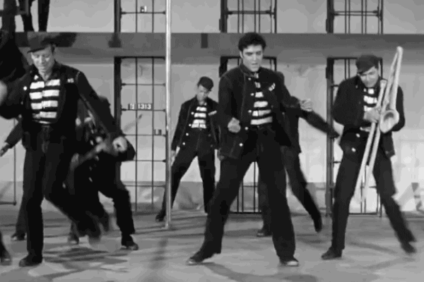
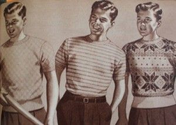
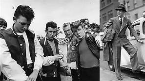
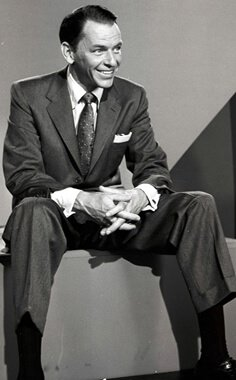

The age of the properly dressed young man is fading away
People are learning that they can dress however they please

People chose to dress how they pleased, with the lower classes choosing a more grunge look, with leather being a common material.

The higher classes of fashion were very suit-forward.
Frank Sinatra was one of the focal points of the 1950s.
With the smooth overtones of "Luck be a Lady" blasting by the swing band as he walks out onstage in his crisp, pressed suits
